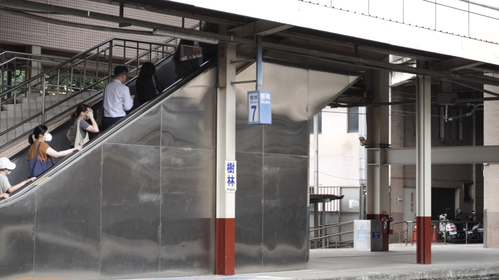
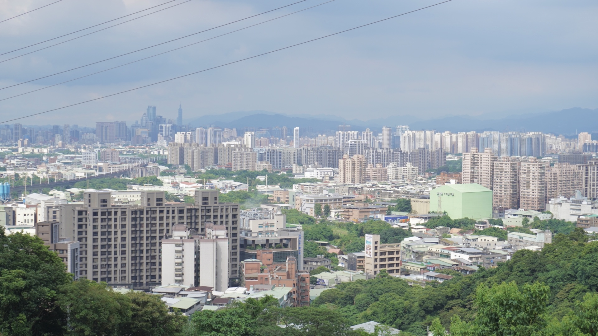
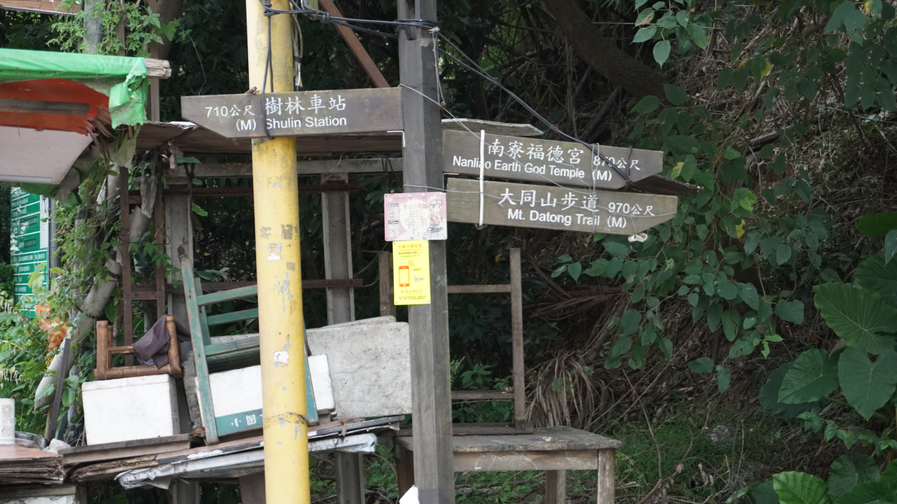
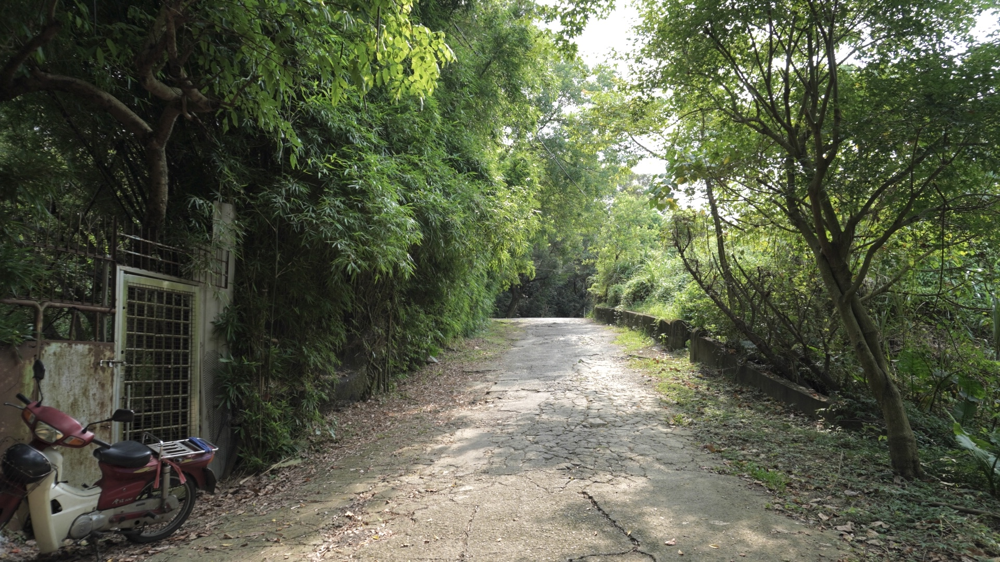

新北市樹林區
基本資訊
位於新北市西北部，鄰近板橋區與三峽區，是一個兼具住宅、工業與商業功能的都市區域。區內地勢以平原為主，河川縱橫，土地開發成熟，使樹林成為台北都會區西側重要的生活與交通節點。 樹林早期以農業與工業為主，隨著都市擴張，逐漸轉型為以住宅與商業為核心的現代都市區。區內生活機能完善，包括學校、商圈、休閒公園與交通設施，使居民生活便利。區域內亦保有部分傳統聚落與古蹟，展現歷史痕跡與地方文化特色。
推薦景點
| 大同山步道
是區內受歡迎的登山健行路線之一。步道沿著丘陵山脊而建，綠意盎然，兩側林木茂密，空氣清新，提供居民與遊客遠離都市喧囂的自然空間。 步道沿途設有休憩平台與觀景點，登高後可俯瞰樹林區與周邊平原景觀，視野開闊，特別在日出或傍晚時分更顯迷人。步道難度適中，適合散步、慢跑或健行，也吸引喜愛攝影與自然觀察的人士前來。



